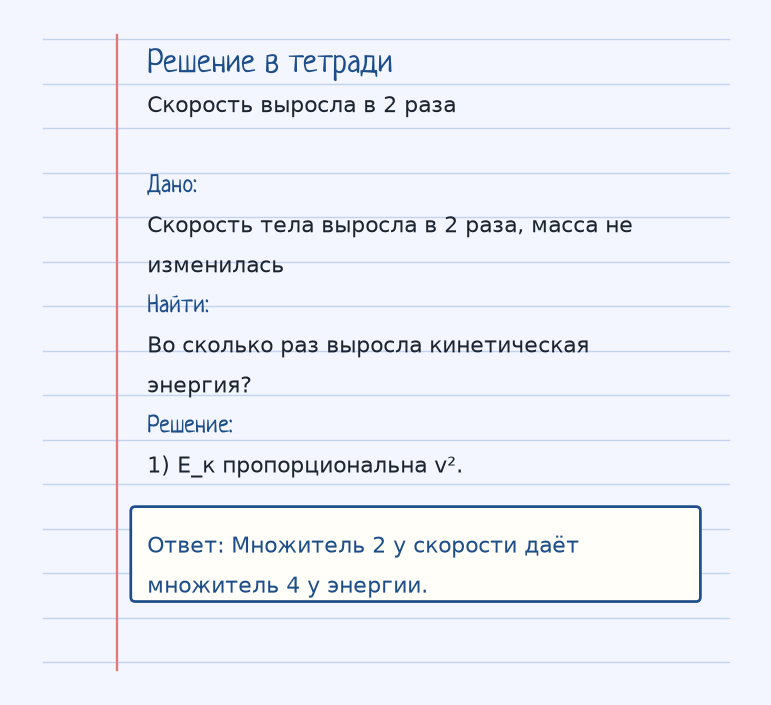
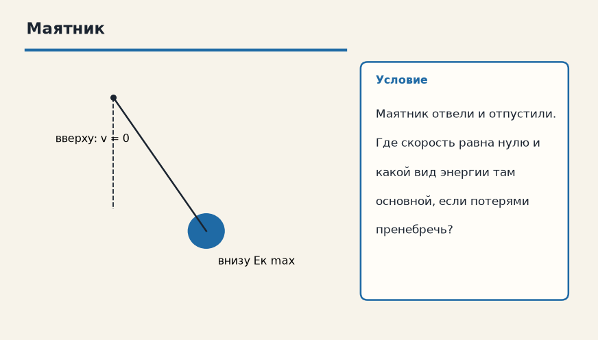

Держи картинку, не строчку. Если можешь показать рукой, куда едет тело и что его толкает, формула уже почти твоя. Ниже — как устроена тема «Кинетическая и потенциальная энергия», где обычно спотыкаются, и два разбора до ответа.
Показ к теме. Это условие, не шпаргалка.
Сначала смысл
Кинетическая — энергия движения (E_к = mv² / 2). Потенциальная — энергия положения (E_п = mgh для поднятых над землей тел).
Кинетическая энергия — энергия движения: E_к = mv²/2. Скорость входит в квадрате, поэтому рост скорости в 2 раза поднимает энергию в 4 раза.
Потенциальная энергия поднятого тела E_п = mgh отсчитывается от выбранного нуля высоты. Само число h без договорённости «откуда меряем» не имеет смысла, а разность высот — имеет.
В замкнутой системе, где трение не переводит энергию в тепло, сумма E_к + E_п сохраняется: маятник в верхней точке почти весь в потенциальной энергии и скорость там ноль, внизу высота минимальна и скорость максимальна. Энергия не исчезла, она сменила вид.
Как решать. Выпиши величины с рисунка к примеру «Скорость выросла в 2 раза». Условие: Скорость тела выросла в 2 раза, масса не изменилась. Во сколько раз выросла кинетическая энергия? Дальше подставляй их в формулу этой темы и сверяй шаги с решением под картинкой — оно закрыто, пока не попробуешь сам. Второй рисунок, «Маятник», тот же приём на других данных: Маятник отвели и отпустили. Где скорость равна нулю и какой вид энергии там основной, если потерями пренебречь? Если оба примера сходятся, тему можно нести на контрольную.
Как читать формулу
E_к = mv² / 2
E_п = mgh
E_к = mv²/2, E_п = mgh для тела у Земли. В замкнутой системе без потерь их сумма сохраняется.
Чтобы осталось в голове
Маятник. В верхней точке скорость = 0 (вся энергия — потенциальная). В нижней — скорость max (вся энергия — кинетическая).
Маятник: вверху скорость равна нулю и энергия потенциальная, внизу скорость наибольшая и энергия кинетическая.
Где обычно спотыкаются
Скорость входит в кинетическую энергию в квадрате! Если скорость выросла в 2 раза, энергия выросла в 4 раза.
Скорость в кинетической энергии в квадрате. Удвоил v — учетверил E_к, а не удвоил.
Дальше две задачи. Сначала схема. Когда сам набросаешь ход, открой тетрадь — там дано, перевод в СИ, шаги и ответ в рамке.
Разбор 1
Скорость выросла в 2 раза
Скорость тела выросла в 2 раза, масса не изменилась. Во сколько раз выросла кинетическая энергия?
На схеме только условие. Ответа там нет — его ещё надо получить.
Смотри на порядок, не на красивое число: сначала единицы, потом формула, потом ответ.
Дано. Скорость тела выросла в 2 раза, масса не изменилась
В СИ.
Найти. Во сколько раз выросла кинетическая энергия?
Решение.
E_к пропорциональна v².
Множитель 2 у скорости даёт множитель 4 у энергии.

Разбор 2
Маятник
Маятник отвели и отпустили. Где скорость равна нулю и какой вид энергии там основной, если потерями пренебречь?

На схеме только условие. Ответа там нет — его ещё надо получить.
Смотри на порядок, не на красивое число: сначала единицы, потом формула, потом ответ.
Дано. Маятник отвели и отпустили
В СИ.
Найти. Где скорость равна нулю и какой вид энергии там основной, если потерями пренебречь?
Решение.
В верхней точке скорость равна нулю, вся механическая энергия — потенциальная.
В нижней точке высота минимальна, скорость и кинетическая энергия максимальны.